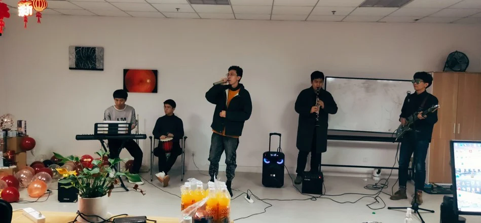
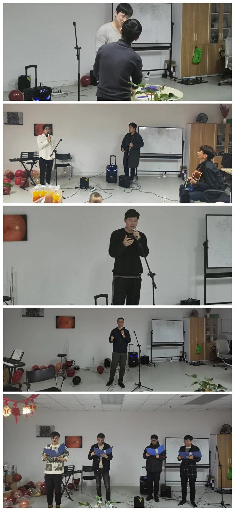
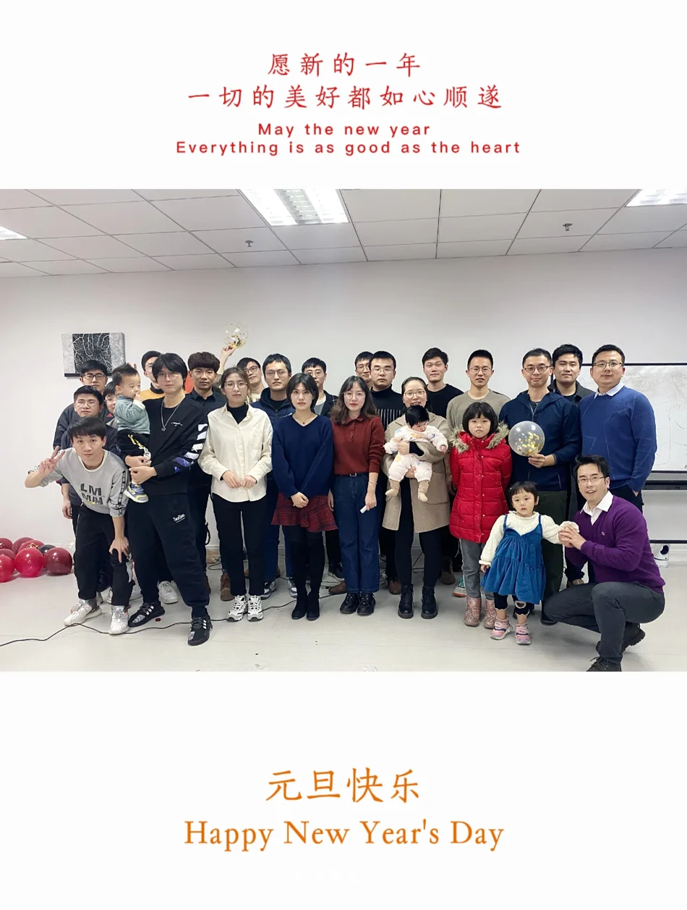

这个元旦，iMED陪你一起度过！
12月30日，在2022年元旦即将来临之际，iMED全体成员在2204欢聚一堂，带着每一个人的祝福共同庆祝了元旦佳节。由赵劲宇、郁帅、郭家琦，郝晋奎、许聪五人以一首《生活因你而火热》拉开整场晚会的序幕。像歌词所说的那样“那平淡如水的生活，因为你而火热，勇敢的你，站在这里……”，唱给每一个在平淡的科研生活中，勇敢的、努力的、负重奔跑的人，青春虽会逝去，但生活依然因你而火热，生命因你而精彩！

iMED成员多才多艺，演出内容精彩纷呈，大家踊跃展现自己。首先由陈方胜带领的F4为大家带来诗朗诵表演，以冷幽默的方式诉说着每一个程序员的小小烦恼。接着许聪、刘汉林同学的魔术表演，让大家耳目一新，一个叫做‘撕牌还原’的魔术，让大家感到非常惊奇，情不自禁的发出惊呼声，因为随着表演者的一声：“变！”碎掉的纸牌竟然变成了一张完整的纸牌！最后由陈佳玉同学带来一首温暖动人的《亲爱的旅人》、沙登峰同学深情演绎了一首《不将就》、作为教师代表的马老师为大家献上了幽默风趣的《五环之歌》，以及一首《不再流浪》，随着缓缓的歌声，将不再孤单的情绪感染给身边的每一个人。

好戏看不完，大奖抽不断，终于来到最后激动人心的抽奖环节，iMED为大家精心准备了各种精美的小礼物，台灯、水杯、耳机等。愿每一个幸运儿都在新的一年里好运加持，论文多多。这个元旦，让我陪你一起度过，iMED祝大家新年快乐！

编辑：白艳苗
摄影：马煜辉